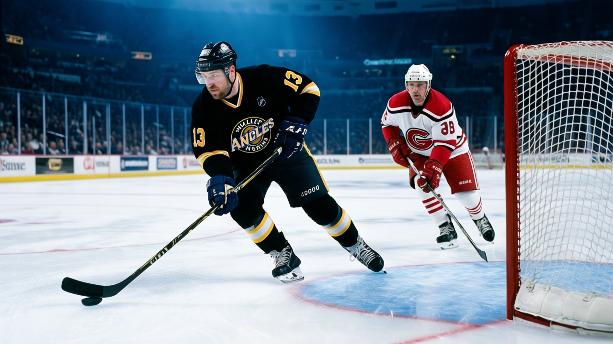

The Index Went Up at Los Angeles While Everything Else Stayed the Same
Three under-23s, three of the league's biggest jumps on the Development Index, and a team buried last in the Pacific at 23 points
 Pete LarocqueScouting editor · The Prospect File
Pete LarocqueScouting editor · The Prospect File
The piece
 Mike Cammalleri79 has played 7 games this season. In those 7 games the Development Index put him up 6 points, tied for the highest reading in the league with
Mike Cammalleri79 has played 7 games this season. In those 7 games the Development Index put him up 6 points, tied for the highest reading in the league with  Marian Gaborik96,
Marian Gaborik96,  Vaclav Nedorost77, and Jared Aulin71. The Book's base grade is 79. The current overall reads 83. The potential figure on the sheet says 97.
Vaclav Nedorost77, and Jared Aulin71. The Book's base grade is 79. The current overall reads 83. The potential figure on the sheet says 97.
At 22.9 minutes a night, Cammalleri is carrying top-six minutes on a team that sits at 6-11-5. Seven points in 7 games is a point a game in a small window, and the Index responds to form, not volume. When the Book sees the form term go to +6 in a player whose base sits at 79, it means the current read is 6 above what the long-term projection alone would give.
Cammalleri is not the only one with a +6 on the board. Jared Aulin, 22, center, also reads +6 on the Index. His base is 71, his current overall 75, his potential 94. He has 5 points in 25 games at 10.3 minutes a night. He is not producing offense. The Index is telling you something about his play that the box score has not caught up to.
Then there is  Alexander Frolov74. 22, left wing, 32 points in 25 games at 23.4 minutes. Overall 78, form +3, potential 95. Frolov is the most finished of the three, the one whose production you can see without a Bureau index to point at.
Alexander Frolov74. 22, left wing, 32 points in 25 games at 23.4 minutes. Overall 78, form +3, potential 95. Frolov is the most finished of the three, the one whose production you can see without a Bureau index to point at.
The team context the young core has to carry
 Los Angeles Kings sit last in the Pacific at 23 points through 25 games. They score 85 and allow 98. The team salary on the sheet is $48.60M, which is neither the highest nor the lowest in the league, and the payroll is not buying wins.
Los Angeles Kings sit last in the Pacific at 23 points through 25 games. They score 85 and allow 98. The team salary on the sheet is $48.60M, which is neither the highest nor the lowest in the league, and the payroll is not buying wins.
They beat  Chicago Blackhawks 5-2 on November 30. They took 4-2 on
Chicago Blackhawks 5-2 on November 30. They took 4-2 on  Mighty Ducks of Anaheim on November 29. Then
Mighty Ducks of Anaheim on November 29. Then  Nashville Predators came in and scored 6. That is the shape of a team that can play with anyone on a given night and cannot sustain it. The young guys are not the problem.
Nashville Predators came in and scored 6. That is the shape of a team that can play with anyone on a given night and cannot sustain it. The young guys are not the problem.
| player | pos | age | overall | base | form | potential | gp | pts | mpg |
|---|---|---|---|---|---|---|---|---|---|
| Mike Cammalleri | RW | 22 | 83 | 79 | +6 | 97 | 7 | 7 | 22.9 |
| Alexander Frolov | LW | 22 | 78 | 77 | +3 | 95 | 25 | 32 | 23.4 |
| Jared Aulin | C | 22 | 75 | 71 | +6 | 94 | 25 | 5 | 10.3 |
What the potential figures mean at 22
The Book gives Cammalleri a 97 potential at age 22 with 7 NHL games. That number says the Bureau thinks the base grade of 79 is not where he ends up. It is not a ceiling. It is the likelihood that the current grade is too low for what he can become. When I see a 97 on a 22-year-old, I update my board.
Aulin's 94 potential at 75 overall and 5 points in 25 games will get laughs, and they should not, because he is a center, he is 22, he is playing 10.3 minutes in a bottom-six role, and the Index has him tied for the top jump in the league. The Bureau does not give +6 to a depth center whose games nobody noticed. Something in the underlying play moved.
Frolov is the safe read. 32 points, 23.4 minutes, a 95 potential that the production already supports. The question with Frolov is not whether he is good. It is whether he is good enough to anchor a rebuild that will take time at a club that has not made the bottom 3 in points through 25 games this season by much.
The draft picture for Los Angeles
Los Angeles Kings hold 5 picks across 5 rounds, with 1 first-rounder. They do not hold any of another club's first. They are not a team that has sold the future. They are a team in the middle of something, and the middle is the hardest part. The young core is 22 and rising. If the Index holds its readings and the potential figures play out, the next 2 seasons at Los Angeles look very different from this one.
I have had Cammalleri high on my board since his first 3 games. He has now played 4 more and I have not moved him down.